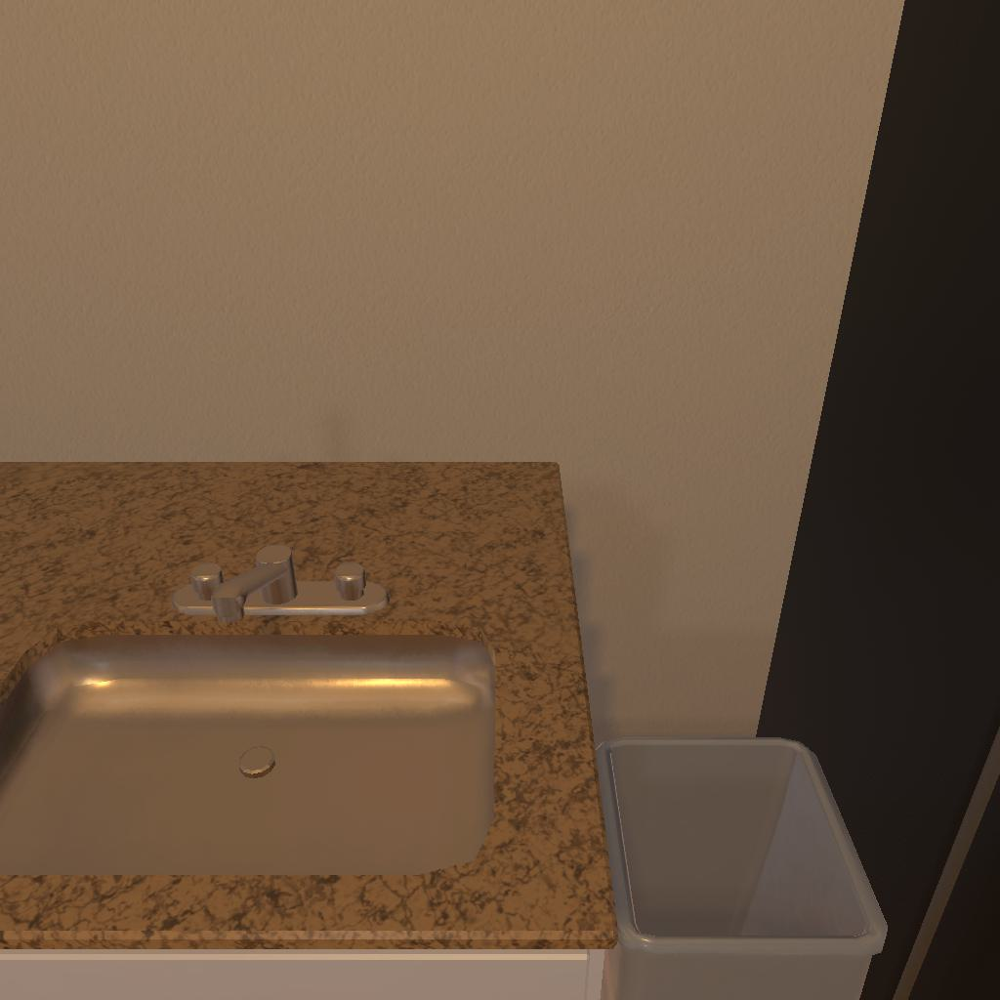

---------------------------------------------------------task: 13---------------------------------------------------------
--------------------------------------------------------------------------------------------------------------------------------------------------------------------
--------------------------------------------------------------------------------------------------------------------------------------------------------------------
Step:--------------------------------------------------------------------------1-------------------------------------------------------------------------------
----------------------------------------
VLM Prompt:
Image1:
Image2:
**Instruction**
1. Analyze the provided images to identify all visible household objects and compare the difference between images (e.h. whether the object is opened or not and taken on hand or not), focusing on those relevant to the task description "clean some tomato and put it in garbagecan."
2. Use the analysis of images and the task hint "The agent must find an object of the desired type, pick it up, go to a sink or a basin, clean the object with a sink or basin, and then find the correct location to place it and put it down there. The agent does not need to use soap bottle or faucet to clean the object, and the agent just needs to do action that is "clean the object with the sink or sink basin"." to answer the question: what is the most reasonable action in the choices for the task description "clean some tomato and put it in garbagecan"?
3. Decide and write the answer using the template: The answer is: (i): , where i is the real number. If there is no desired object in images, search every place based on **Initial Observation** to find the object. And if no one is exactly correct, choose a similar answer.
**Initial Observation**
You are in the middle of a room. Looking quickly around you, you can see countertop (1-2), cabinet (1-11), garbagecan (1), toaster (1), sinkbasin (1), fridge (1), sink (1), microwave (1), drawer (1-3), stoveburner (1-4), coffeemachine (1), diningtable (1)
**Answer Choices**
(1): go to countertop 1
(2): go to cabinet 1
(3): go to cabinet 2
(4): go to cabinet 3
(5): go to garbagecan 1
(6): go to cabinet 4
(7): go to toaster 1
(8): go to sinkbasin 1
(9): go to sink 1
(10): go to cabinet 5
(11): go to microwave 1
(12): go to countertop 2
(13): go to cabinet 6
(14): go to cabinet 7
(15): go to drawer 1
(16): go to stoveburner 1
(17): go to stoveburner 2
(18): go to cabinet 8
(19): go to drawer 2
(20): go to stoveburner 3
(21): go to stoveburner 4
(22): go to coffeemachine 1
(23): go to cabinet 9
(24): go to cabinet 10
(25): go to cabinet 11
(26): go to diningtable 1
(27): go to drawer 3
(28): open fridge 1
(29): close fridge 1
(30): examine fridge 1
**Answer**
Let's think step by step by following the instructions.
----------------------------------------
----------------------------------------
Original Response:
Image Analysis:
- Image 1 shows a sink basin with a faucet, and a garbage can next to it.
- Image 2 is too dark to identify any objects. It could be an image taken with the camera facing a dark surface or object.
Task Description Analysis:
The task description "clean some tomato and put it in garbagecan" implies that the agent needs to find a tomato, clean it in the sink or sink basin, and then place it in the garbage can.
Action Decision:
Based on the initial observation, the agent is in a room with various household objects, including a sink and a garbage can. Since the task requires cleaning a tomato, the sink or sink basin would be the most relevant object. The garbage can is also mentioned in both the task description and the initial observation, making it another relevant object for the task.
The images provided show the sink basin (Image 1) and the garbage can (Image 1), which are relevant to the task. However, the images do not show a tomato, meaning the agent must search for it.
Since the task requires cleaning the tomato, the agent would first need to find the tomato, which is not visible in the provided images. Therefore, the agent should search every place based on the initial observation.
The answer is: If there is no desired object in images, search every place based on **Initial Observation** to find the object. Since the agent needs to find a tomato, the most reasonable action would be to search locations where tomatoes might be stored, such as the fridge or countertop. However, since these options are not available in the answer choices, the agent should search the cabinets where food items are commonly stored.
The most reasonable action based on the provided choices would be to start by searching in the cabinets, which could potentially have tomatoes. The first cabinet to check would be cabinet 1.
The answer is: (2): go to cabinet 1
----------------------------------------
----------------------------------------
>>> Refine Original VLM Response and Get Pure Action: No action
----------------------------------------
-----------------------------------------------------------------
Running time: 14.584254503250122 seconds
Total Money: 5.823350000000003
-----------------------------------------------------------------
-----------------------------------------------------------------
Text Observation:Nothing happens.
-----------------------------------------------------------------
UNSUCCEED